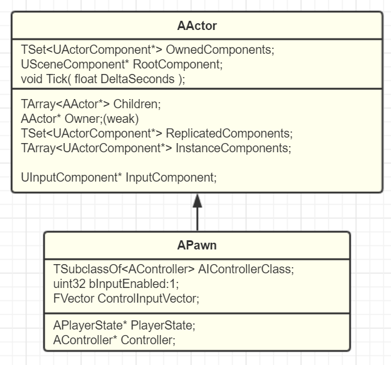

GamePlay架构(4)：Pawn
Component
在UE里，Component表达的是"功能"的概念。比如说你要实现一个可以响应的WASD移动的功能，或者是VR里抓取的功能，甚至是嵌套另一个Actor的功能，这些都是一个个组件。
正确理解"功能"和"游戏业务逻辑"的区分是理解Component的关键要点。实现一个个"与特定游戏无关"的功能。理想情况下，等你的一个游戏完成，你那些已经实现完成的Components是可以无痛迁移到下一个游戏中用的。
Actor
不要因为 Actor 好用就往里塞满一切，真正需要理解的是表现（Actor）与逻辑控制（Controller）的分离。

Pawn
哪些Actor需要附加逻辑？并不是所有的Actor都需要和玩家互动，而我们所谓的游戏业务逻辑，实际上编写的就是该如何对玩家的输入提供反馈。这样的类别划作Pawn。
Pawn表达的最关键点是可被玩家操纵的能力。
为何Actor也能接受Input事件？
- 灵活性与普适性：输入种类（按键、摇杆、陀螺仪等）极其多样，官方无法预判哪些 Actor 子类一定不需要输入。
- 组件化原则：为了保持架构的一致性，UE 将输入功能封装为
InputComponent。由于 Actor 是组件的载体，在基类中集成该组件能保证最大的灵活性。
DefaultPawn，SpectatorPawn，Character
DefaultPawn：提供了一个默认的Pawn，默认带了一个DefaultPawnMovementComponent、spherical CollisionComponent和StaticMeshComponent。
SpectatorPawn：派生于DefaultPawn，提供了一个基本的USpectatorPawnMovement（不带重力漫游），并关闭了StaticMesh的显示，碰撞也设置到了"Spectator"通道。给它们一些摄像机"漫游"的能力。
Character：UE为我们直接提供了一个人形的Pawn来让我们操纵。像人一样行走的CharacterMovementComponent，尽量贴合的CapsuleComponent，再加上骨骼上蒙皮的网格。同样的三件套，不一样的配方。